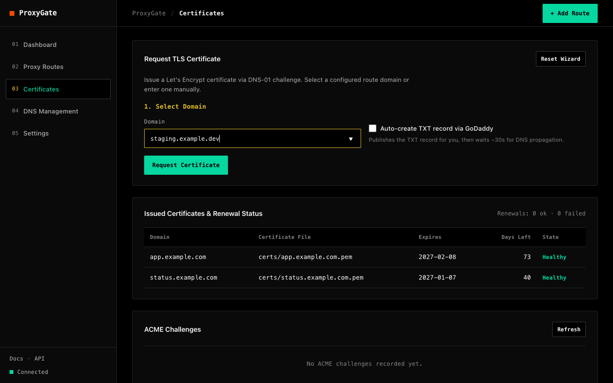
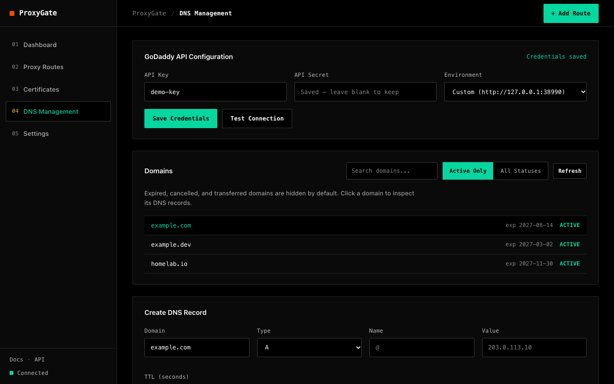

Put your self-hosted apps on your own domains, with HTTPS.
ProxyGate is a single Go binary. It routes requests by domain and path to services on your machine or network, gets Let's Encrypt certificates over DNS-01, and keeps them renewed through the GoDaddy DNS API. Routes and certificates are managed from a built-in web UI or a REST API.
Features
What ProxyGate does once it is running.
Domain and path routing
Send app.example.com to one service and app.example.com/api to another. The longest matching path prefix wins, WebSocket and server-sent event connections pass through, and route changes take effect without a restart.
HTTPS with Let's Encrypt
Certificates are issued with the DNS-01 challenge, so the machine does not need to be reachable from the internet to get one. Each domain gets its own certificate, served by SNI. HTTP requests to a TLS route are redirected to HTTPS.
Automatic renewal
Once a day ProxyGate checks every TLS route and renews certificates with fewer than 30 days left. Renewal publishes the challenge record through GoDaddy, so it needs GoDaddy credentials; without them you repeat the request before the certificate expires. New certificates are loaded without restarting.
GoDaddy DNS records
List your domains, then view, create and delete their DNS records. Expired, cancelled and transferred domains are hidden unless you ask for them. The challenge TXT record can be published for you when requesting a certificate.
Locked-down admin access
The admin UI requires a password, set on first start with a one-time code and recoverable from the machine with proxygate passwd. It listens on localhost by default, only accepts the networks you allow, and rejects requests from other websites. HTTPS and stricter login rules are one setting away.
One binary, one config file
No runtime dependencies. All settings live in one JSON file, written atomically, with the GoDaddy key, secret and ACME email stored encrypted (AES-256-GCM). The proxy keeps serving even if the encryption key goes missing.
How it works
One process with two sides: the proxy engine serves your visitors on the HTTP and HTTPS ports, and the admin API edits the configuration. Changes are saved to the config file and applied to the proxy straight away; only port and network allowlist changes wait for a restart.
Admin UI
Served on the admin port (http://127.0.0.1:9090 by default) behind a password. Everything it does is also available through the REST API with an API token. Screenshots use example data.




Quick start
Build with Go 1.24 or later. For running it as a service and binding ports 80 and 443, see deployment.md.
# Build
git clone https://github.com/gcis/proxygate.git && cd proxygate
make build
# Run. The config file is created with defaults on first start.
./bin/proxygate --config ./data/proxygate.json
# Admin UI: http://127.0.0.1:9090 (docs at /docs/)
# Proxy: :8080 (HTTP) and :8443 (HTTPS) by default
# First visit: the admin UI asks for the one-time setup code, then a password.
cat ./data/setup-code
# Lost the password? Set a new one from the machine (signs everyone out):
./bin/proxygate passwd --config ./data/proxygate.json
# To use the admin UI from your LAN, set "admin_host": "0.0.0.0" in the config,
# then allow your network (the flag can be repeated and is saved to the config):
./bin/proxygate --config ./data/proxygate.json --allow-network 192.168.1.0/24